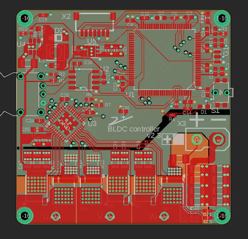
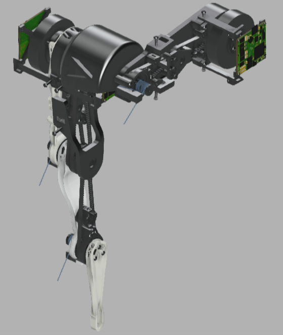
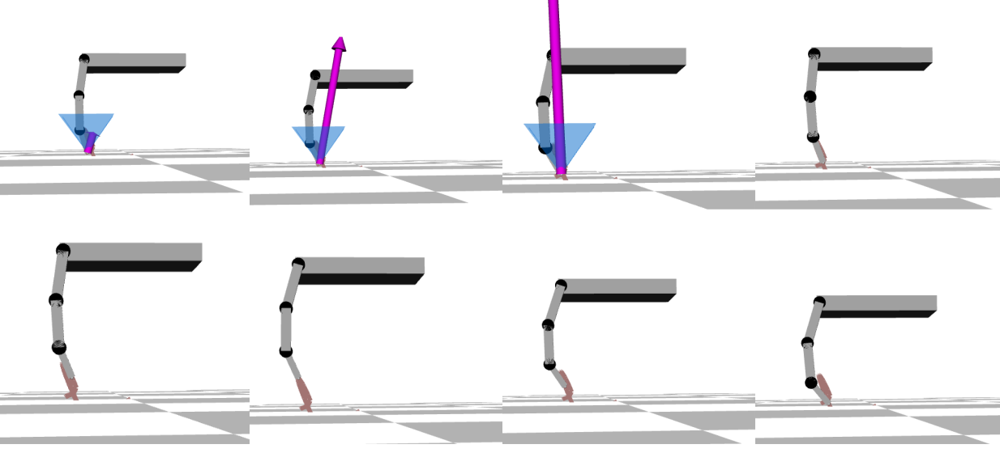

Three-link actuated small jump
Design verified several important concepts, such
as feasibility of the three-link structure for legged robotics, advantages and abilities of
in-links built compliance when it comes to impact mitigation and positive aspects of redundancy
achieved with introduction of additional link for the robotics leg. Such design is expected to introduce
new ways of robot control in order to better accommodate compliance and take advantage of it.
*All work has been done by Rakcevic, Vasilije under direct supervision of Stapperfend, Simon and Del Prete, Andrea.
General guidance provided by Melan, Evgeni and Nitschke, Tony from Augmented Robotics GmbH.
Project links
|

|
Electronics - controller design files. |

|
Low-level Software - Motor driver files. |
|

|
Mechanics- leg design files with robot Generative Design optimisation setup. |
|

|
High-level software - Motion simulation environment. |